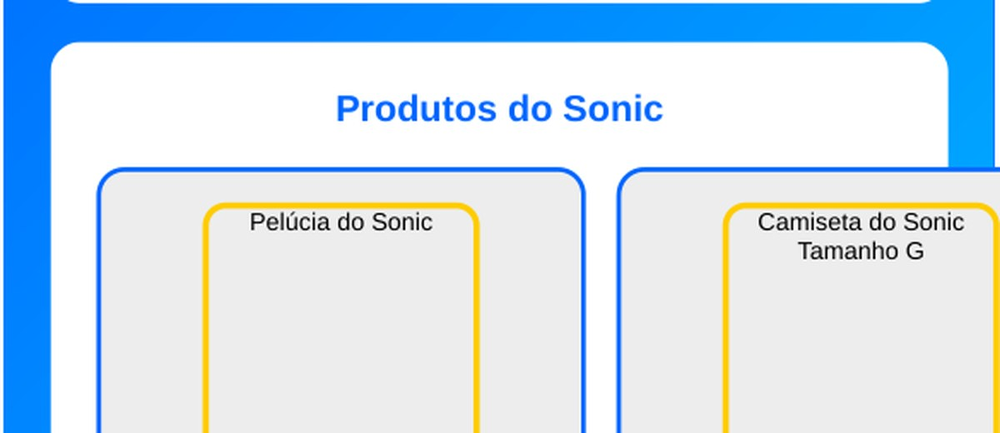
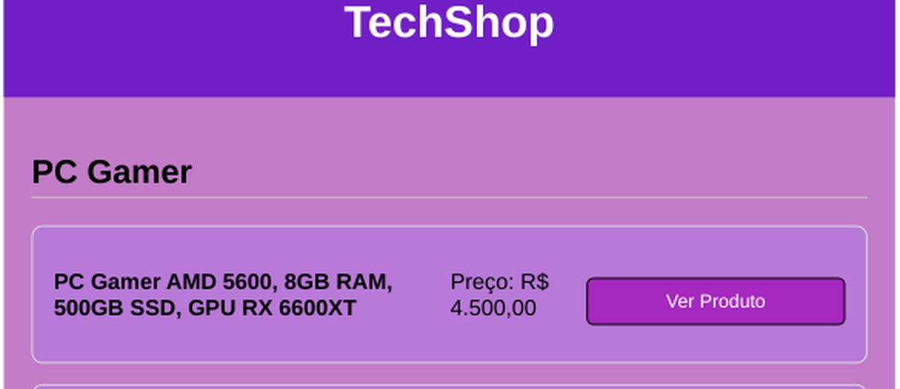
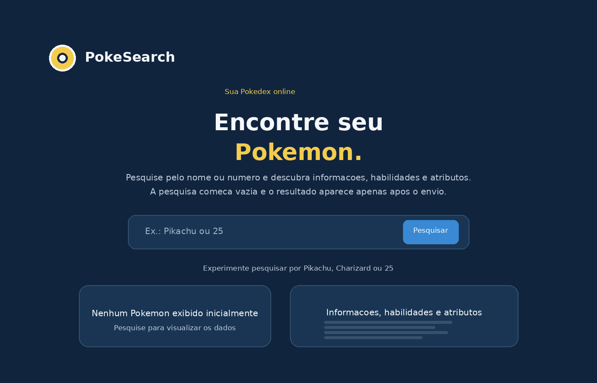
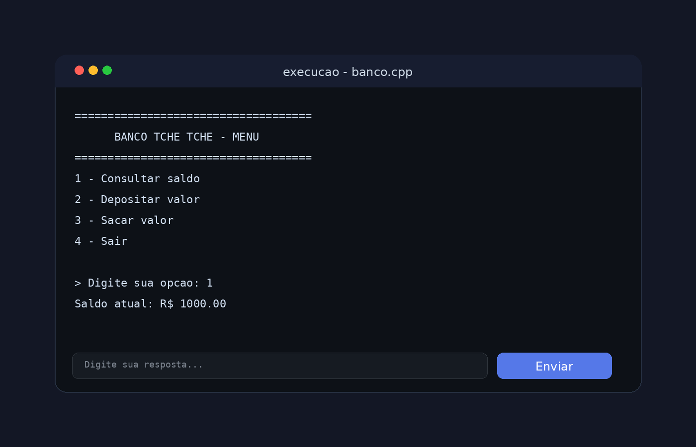
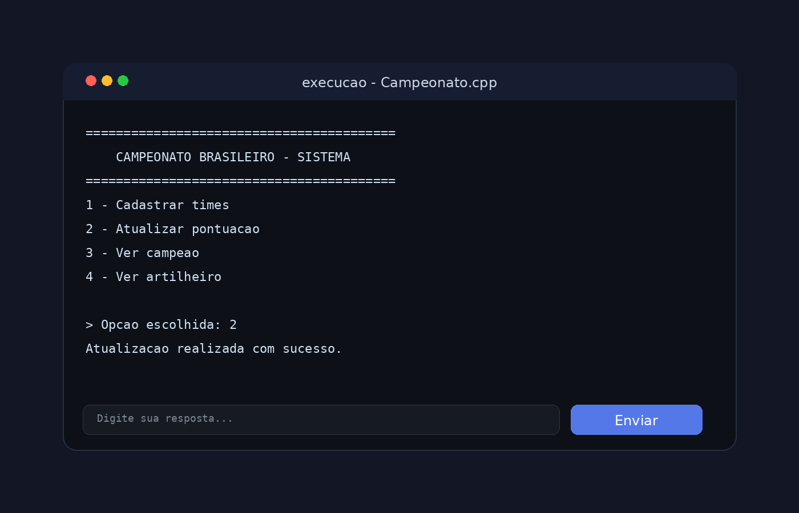
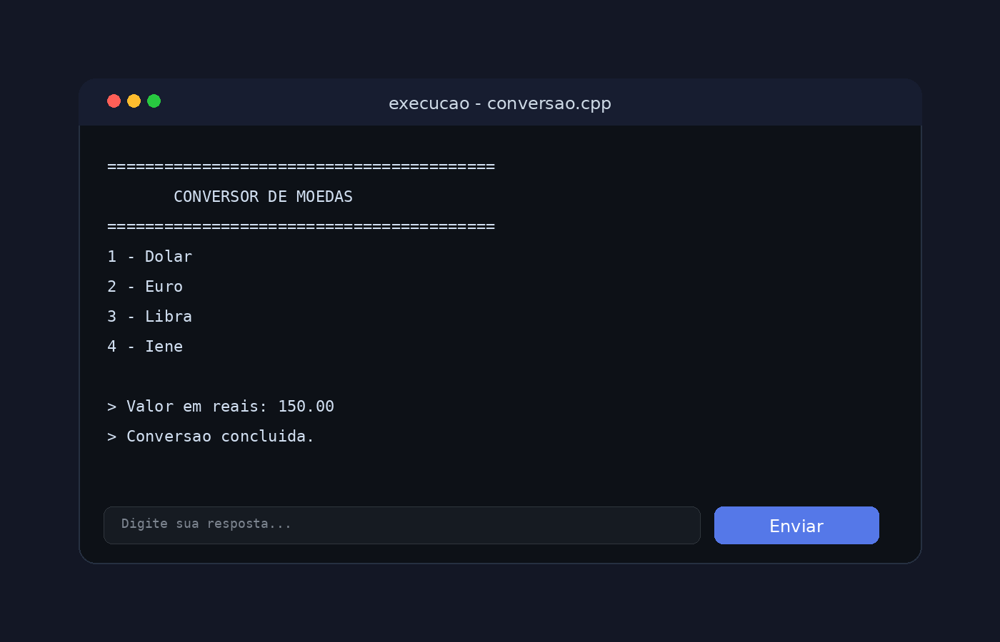

HTML
Estrutura de páginas web
Olá, eu sou
Estudante de Engenharia de Software
Gosto de tecnologia, programação e hardware. Estou desenvolvendo meus conhecimentos por meio dos estudos e de projetos práticos.
SOBRE MIM
Minha formação, meus interesses e o que venho desenvolvendo.
Estou no primeiro ano de Engenharia de Software na UNINGÁ, indo para o segundo, e venho desenvolvendo meus conhecimentos em programação, banco de dados e desenvolvimento web. Tenho bastante contato com C, MySQL, HTML e outras tecnologias.
Também gosto bastante da parte física da computação, principalmente hardware de PCs. Acredito que a inteligência artificial vai ter um papel cada vez maior na tecnologia, mas como uma ferramenta de apoio para as pessoas, não como substituta. Por isso, procuro fazer cursos, aprender novas linguagens e continuar estudando.
Em trabalhos em grupo, costumo colaborar com a equipe e muitas vezes tomo a iniciativa de organizar as tarefas e ajudar a conduzir o trabalho.
Fora dos estudos, também valorizo meu relacionamento e os momentos que passo com minha namorada.
HABILIDADES
Uma visão geral das ferramentas que já utilizei ou estou aprendendo.
Estrutura de páginas web
Estilo e layout de sites
Interatividade e lógica web
Lógica e programação
Consultas e banco de dados
Versionamento e repositórios
As habilidades representam tecnologias que já utilizei ou estou estudando, não necessariamente domínio profissional.
PROJETOS
Alguns trabalhos que realizei durante meus estudos.

01Loja temática com produtos do Sonic e formulário que utiliza a API ViaCEP para consulta de endereço.

02Uma página de loja de tecnologia com categorias de produtos, imagens e informações de preço.

03Pokédex online que consulta a PokéAPI para buscar Pokémon e exibir sprites, tipos, habilidades e atributos.

04Simulação de um sistema bancário com consulta de saldo, depósitos, saques e menu interativo.
Ver projeto ↗
05Cadastro e acompanhamento de times, pontos, vitórias, gols e artilharia de um campeonato.
Ver projeto ↗
06Programa que converte valores em reais para diferentes moedas utilizando operações matemáticas.
Ver projeto ↗Mais projetos em breve
CONTATO
Veja meus repositórios e acompanhe os projetos que estou desenvolvendo.
Você também pode entrar em contato por e-mail.